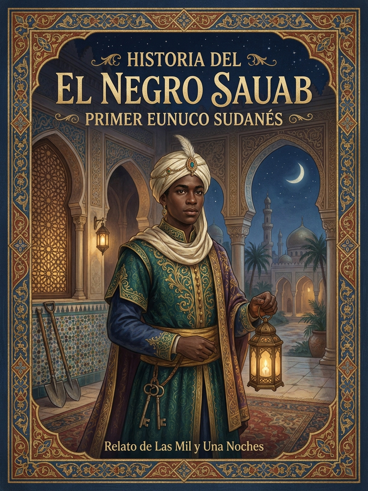
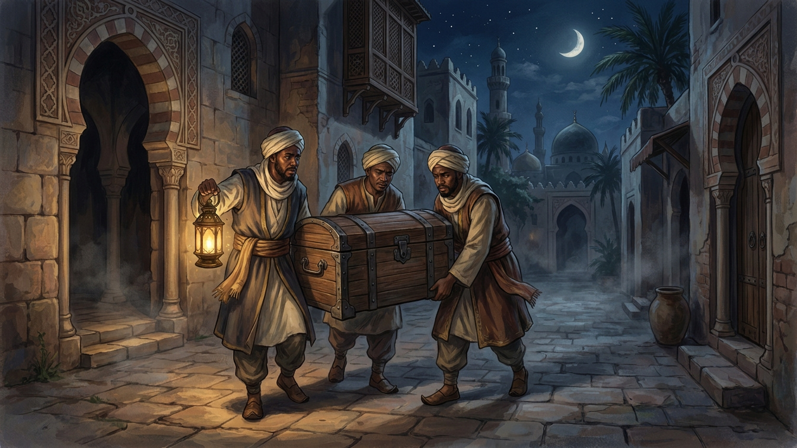
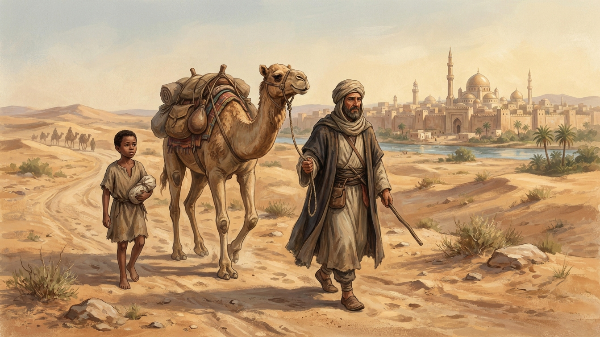
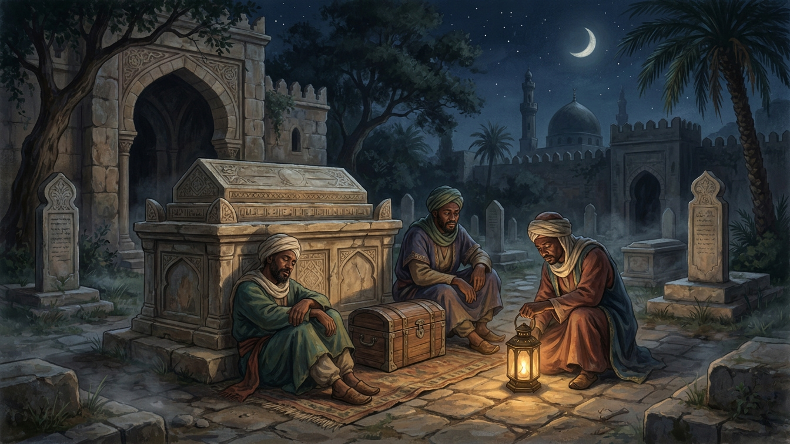

<meta charset="UTF-8">
<link rel="stylesheet" href="css/estilo1.css">
<link rel="stylesheet" href="css/libro1-estilos.css">
<link href="https://fonts.googleapis.com/css2?family=Open+Sans:wght@300;400;600;700&display=swap" rel="stylesheet">

<!-- Fragmento para inyectar en pagina.html (rutas relativas a pagina.html) -->
<article class="libro-detalle">

    <div class="libro-encabezado">
        <h2 class="titulo-seccion">Las mil y una noches</h2>
        <p class="libro-subtitulo">Relato: «El negro Sauab, primer eunuco sudanés»</p>
    </div>

    <!-- Portada + ficha técnica -->
    <section class="libro-ficha">
        <figure class="libro-portada">
            
            <figcaption>Ilustración de portada</figcaption>
        </figure>

        <div class="libro-datos">
            <h3>Ficha del relato</h3>
            <ul>
                <li><strong>Nombre original de la obra:</strong> ألف ليلة وليلة (<em>Alf layla wa-layla</em>)</li>
                <li><strong>Nombre en español:</strong> Las mil y una noches</li>
                <li><strong>Relato:</strong> Historia del negro Sauab, primer eunuco sudanés</li>
                <li><strong>Forma parte de:</strong> Historia de Ghanem ben-Ayub y de su hermana Fetnah (noche 38)</li>
                <li><strong>Autoría:</strong> Anónima y colectiva (recopilación de cuentos populares)</li>
                <li><strong>Época:</strong> Reunida entre los siglos VIII y XIV aproximadamente</li>
                <li><strong>Origen:</strong> Medio Oriente</li>
                <li><strong>Género:</strong> Cuento</li>
                <li><strong>Idioma original:</strong> Árabe</li>
            </ul>
        </div>
    </section>

    <!-- Audio -->
    <section class="libro-audio">
        <h3>Escucha la reseña</h3>
        <p>Toda la información de esta página, narrada en audio.</p>
        <audio controls preload="none">
            <source src="audios/negro-sauab.mp3" type="audio/mpeg">
            Tu navegador no admite el elemento de audio.
        </audio>
    </section>

    <!-- Personajes -->
    <section class="libro-bloque">
        <h3>Personajes principales</h3>
        <div class="libro-personajes">
            <div class="libro-personaje">
                <h4>Sauab</h4>
                <p>El primer eunuco sudanés, portador de la linterna, que cuenta su historia.</p>
            </div>
            <div class="libro-personaje">
                <h4>Kafur</h4>
                <p>El segundo eunuco, compañero de Sauab, que cuenta su historia después.</p>
            </div>
            <div class="libro-personaje">
                <h4>Bakhita</h4>
                <p>El tercer eunuco, que completa el grupo y también narra la suya.</p>
            </div>
            <div class="libro-personaje">
                <h4>El guardia de palacio</h4>
                <p>El hombre que compra a Sauab siendo niño y lo cría en su casa.</p>
            </div>
            <div class="libro-personaje">
                <h4>La hija del guardia</h4>
                <p>La joven con quien Sauab crece y cuyo destino se cruza con el suyo.</p>
            </div>
        </div>
    </section>

    <!-- Resumen -->
    <section class="libro-bloque">
        <h3>Resumen</h3>
        <p>Tres eunucos negros sudaneses, Sauab, Kafur y Bakhita, cargan un cajón de noche para dejarlo en una tumba, mientras Ghanem ben-Ayub, escondido dentro, los escucha. Cansados del camino, se detienen a descansar y uno propone que cada uno cuente cómo llegó a convertirse en eunuco. Sauab, el que lleva la linterna, toma la palabra primero.</p>
        <p>Cuenta que, siendo apenas un niño de cinco años, un mercader de esclavos lo arrancó de su tierra y lo llevó a Bagdad, donde fue vendido a un guardia de palacio. En esa casa creció junto a la hija pequeña de su amo, a quien divertía con juegos, bailes y canciones, y todos lo querían.</p>
        <p>Con el paso de los años, entre Sauab y la joven ocurre una falta grave que nadie debía descubrir. Asustado, él huye a casa de un amigo. La madre de la joven, para evitar el escándalo, arregla discretamente su matrimonio con un barbero, y a Sauab lo mutilan para que siga al servicio de su ama como eunuco. Con el tiempo, y tras recibir los bienes de su amo, Sauab llega a ser eunuco de palacio, igual que sus compañeros. Al terminar, toma la palabra Kafur.</p>
        <p class="libro-nota">Aviso: el relato original trata temas para público adulto; aquí se resume de forma general. Este resumen revela el desenlace.</p>
    </section>

    <!-- Enseñanzas -->
    <section class="libro-bloque">
        <h3>3 enseñanzas del relato</h3>
        <ol class="libro-ensenanzas">
            <li>
                <strong>Nuestros actos tienen consecuencias.</strong>
                Una decisión tomada sin pensar puede cambiar el destino de una persona para siempre.
            </li>
            <li>
                <strong>Respetar los límites y la confianza que se nos da.</strong>
                Sauab fue querido en esa casa, pero traicionó esa confianza; el respeto es la base de cualquier relación.
            </li>
            <li>
                <strong>Reflexionar sobre la injusticia de la esclavitud.</strong>
                Sauab fue separado de su tierra siendo un niño, y su historia nos invita a pensar en lo injusto de privar a alguien de su libertad.
            </li>
        </ol>
    </section>

    <!-- Ilustraciones -->
    <section class="libro-bloque">
        <h3>Ilustraciones de la obra</h3>
        <div class="libro-galeria">
            <figure>
                
                <figcaption>Los tres eunucos y el cajón</figcaption>
            </figure>
            <figure>
                
                <figcaption>El viaje hacia Bagdad</figcaption>
            </figure>
            <figure>
                
                <figcaption>Descanso junto a la tumba</figcaption>
            </figure>
        </div>
    </section>

    <!-- Dónde conseguirlo -->
    <section class="libro-bloque libro-comprar">
        <h3>Dónde conseguir el libro</h3>
        <ul>
            <li>
                <strong>Comprar en librería:</strong>
                <a href="https://porrua.mx/las-mil-y-una-noches-9789700771533.html" target="_blank" rel="noopener">En la libreria Porrúa</a>
            </li>
            <li>
                <strong>Leer gratis (texto en español):</strong>
                <a href="https://es.wikisource.org/wiki/Las_mil_y_una_noches:66" target="_blank" rel="noopener">Historia del negro Sauab en Wikisource</a>
            </li>
        </ul>
    </section>

</article>